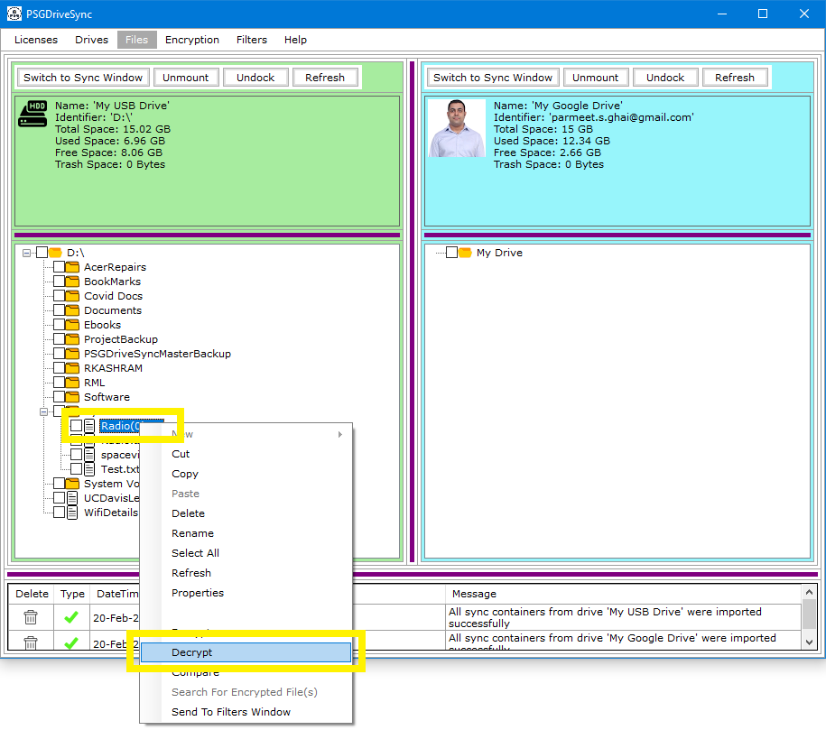
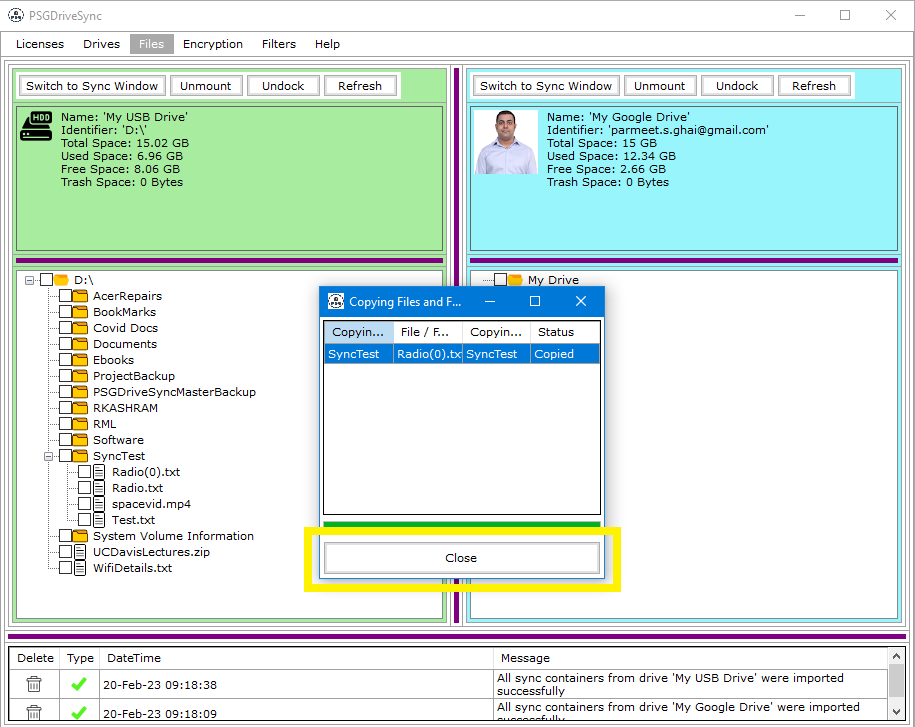
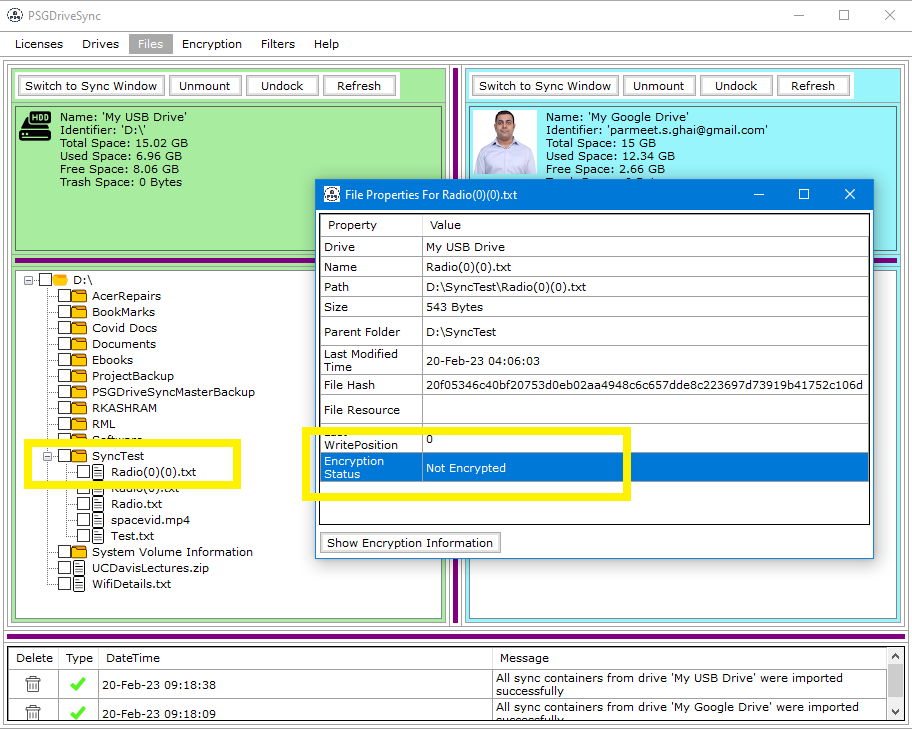

Decryption process is the exact opposite of encryption process where it lets us get the original unencrypted data back from an encrypted file using the encryption key tag and the file's signature file that was created during the encryption process. Following are the scenarios which describes what to do when either or both of the encryption key tag and signature files go missing.
|
1 |
Right click on the file or folder that you would like to decrypt and then click on "Decrypt" in the right click menu. |
 |
|
2 |
If either the encryption key tag or the signature file goes missing then please follow the steps mentioned above otherwise a progress window will pop open displaying the progress of the decryption process. Once it completes then you click on "Close". |
 |
|
3 |
The decrypted file should show up in the same directory or folder as the original file however it will have a number appended to it so as to distinguish it from the original encrypted file.You can also right click on the new decrypted file and click on "Properties" in the right click menu to verify its encryption status as "not encrypted". |
 |